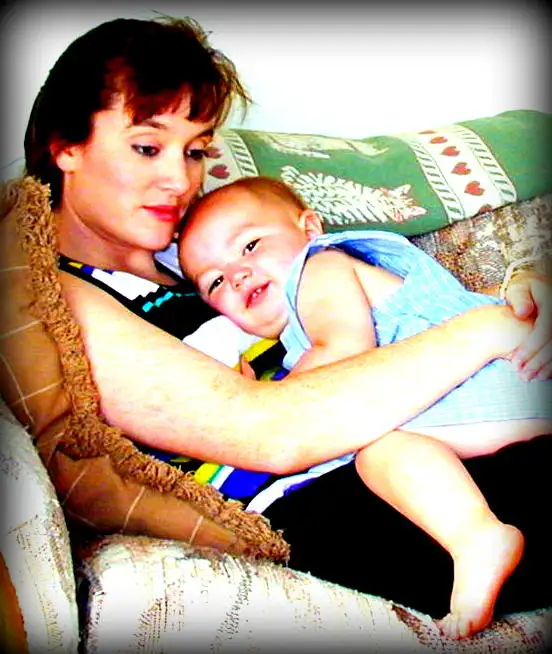

In I Timothy 2:15, we read, “But women will be saved through childbearing…”
I’ve always taken that to be spiritual, but it may be more than that. Our babies may be saving our bodies just as much as our souls.
{kind=link}

Recently, a meme started floating around social media with a depiction of a baby in the womb, and the words: “During pregnancy, if the mother suffers organ damage, the baby in her womb sends her stem cells to repair the damaged organ.”
It’s a pretty incredible assertion, and as I probed a little more, I found, as one might expect, a bit of controversy surrounding the statement. Can babies really save their mamas in this way, too?
Those of us who are mamas know, inherently, that our babies are an intricate part of us, not just during the pregnancy, but forever; that we are attached to them in some mysterious way until the end of our lives — and beyond for those of us who believe in an after-life.
That might be explained by science now, in part through what is called fetal cell microchimerism, an exchange of cells from mother to child; something that can affect a mother’s health not only during pregnancy but for years afterward.
It’s absolutely fascinating. Evidence that mother and child are bound in ways we can’t have fathomed before now are coming into view.
Though the research regarding fetal cell microchimerism is still young, Mads Kamper-Jørgensen, a professor of health at the University of Copenhagen, has noted that much epidemiological evidence for this exchange between mother and baby has come to light.
“Having kids protects you from breast cancer, but we don’t really know why. If you have kids, you live longer, but we don’t really know why. Women live longer than men, but we don’t know why,” he said, as noted in this article in The Atlantic. “This phenomenon, this may be it.”
An article in LifeSiteNews, “Unborn child just a ‘parasite’? Cutting edge science shows fetal cells heal mother for life,” also brings out what one researcher calls “striking evidence” relating to the potential of a baby’s fetal cells to “repair and rejuvenate” its mother.
As noted in the same piece, Carol Artlett, a researcher at Philadelphia’s Thomas Jefferson University, has said that “even if a woman miscarries or deliberately aborts her child, the cells of the unborn child nonetheless remain with the mother, even for decades.”
We are indelibly connected to our children, and our children, even those who are with us for a short time, can contribute important health benefits to our bodies.
This also seems evidence for why women who have babies in their elder childbearing years have been known to live longer. And it demonstrates the eternal impact of our children on our lives, emphasizing the capacity of the human body to heal and be healed, not to mention the amazing mind of God, and how he’s worked everything for the good.
Indeed, the depth of closeness we feel toward our children, even at their smallest, is real and merited. The child we lost through miscarriage remains a part of me, not just spiritually, but physically. I find that mind-blowingly amazing.
In light of the disregard for children in the womb we’ve witnessed in recent weeks, we are back at the beginning, at the realization that life is truly precious in every sense of the word. As we give life to our children, so they give life to us. This whole and beautiful circle works best if intact. We will experience (and have experienced) devastating effects through tampering with this life-giving band of love.
Q4U: What is your reaction to this new understanding of how babies and mothers interact, even before birth?